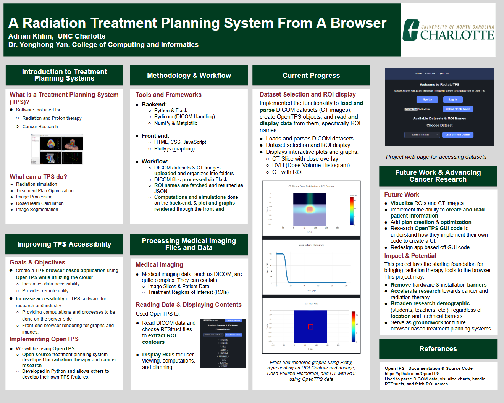
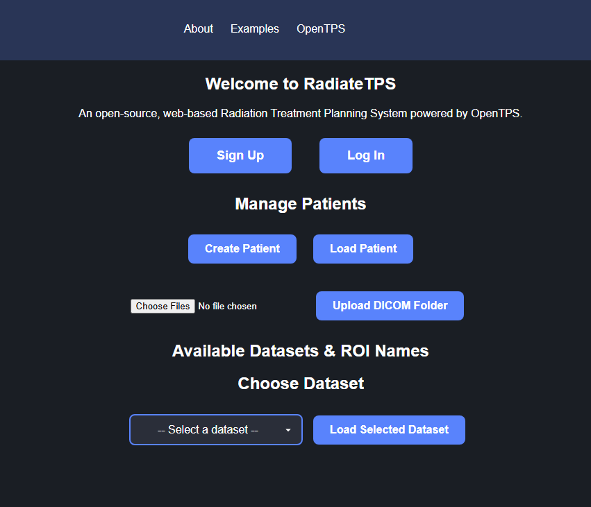

My TPS Project - RadiateTPS
RadiateTPS is my undergraduate research project with Dr. Yonghong Yan at UNC Charlotte. The project brings OpenTPS, a treatment planning system for radiation therapy, into the browser using modern web technologies. Our goal is to make treatment planning concepts more accessible to students and educators.
Goals
- Adapt OpenTPS to a browser-friendly, interactive interface
- Enable students to view CT data, ROIs, and dose plans online
- Provide educational tools and visualizations for TPS concepts
Future Work
- Visualize ROIs and CT images
- Implement the ability to create and load patient information
- Add plan creation & optimization
- Research OpenTPS GUI code to understand how they implement their own code to create a UI
- Redesign app based off GUI code
Project Gallery
Below are a few screenshots and mockups of RadiateTPS in development including the tutorial page, and our charts rendered on the front end with Plotly.js:
